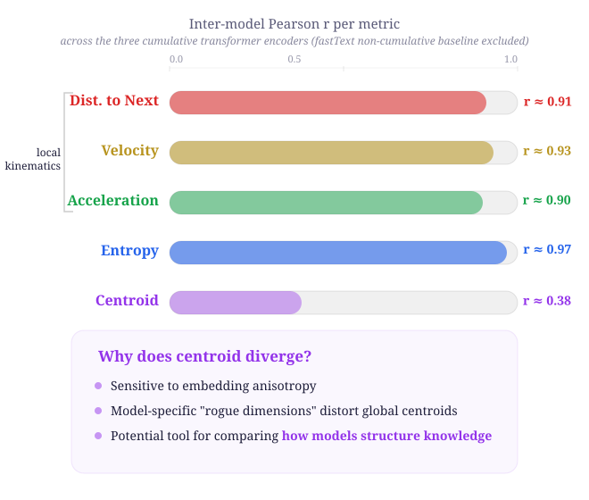

ICLR 2026
Characterizing Human Semantic Navigation in Concept Production as Trajectories in Embedding Space
All authors contributed equally
Center of Mathematics, Computing & Cognition
Dept. of CS & Operations Research
All authors contributed equally

Navigation through semantic representations is often characterized in terms of clustering and switching.
This misses the step-by-step granularity — the continuous geometry of how meaning unfolds over time.
Existing NLP pipelines are labor-intensive, heterogeneous, and hard to compare across studies.
→ What if we framed semantic retrieval as a trajectory through geometric space?

Each word xt encodes the full prefix up to step t.
Step 1: embed "cat"
Step 2: embed "cat dog"
Step 3: embed "cat dog shark"
⋮
This captures dependencies between successive items — semantic retrieval is inherently cumulative.
Working memory and inhibitory control shape each response based on all previous ones.
Result: a unique trajectory per participant × concept pair

Cosine distance between consecutive points. Semantic jump size.
vt = xt+1 − xt
Direction + magnitude of each step.
at = vt+1 − vt
Low → stable cluster. High → erratic switch.
Shannon entropy of median-split steps. Predictability of the search.
Distance to mean position of all items. Dispersion of the search.
Three groups: Healthy Controls (HC), Parkinson's Disease (PD), and behavioral variant Frontotemporal Dementia (bvFTD).
Three categories: swear words, animals, and letters. Compares structured vs. taboo lexicons.
Cross-linguistic validation of trajectory metrics across semantic categories.
Parallel protocol to Italian. Different cultural-linguistic structure.
Statistics: Generalized Linear Mixed Models (GLMMs) with Tukey HSD post-hoc correction.

Distance to Next — larger semantic jumps
Velocity — erratic movement
Acceleration — abrupt direction changes
Entropy — unpredictable search
Distance to Centroid — search confined to a tighter neighborhood despite being more volatile.
Interpretation: a kinematic signature of executive dysfunction — volatile trajectories within a diminished semantic space.
PD and bvFTD did not differ from each other — both show similarly disrupted navigation relative to healthy controls.

Highest kinematic values. Taboo lexicons lack sub-category structure → high variability in a compact space.
Lowest kinematic values, highest centroid distance. Structured sub-categories allow organized exploitation.
Italian and German datasets reveal language-specific category discrimination. Same protocol, but different category effects — cultural and linguistic structure shapes how meaning is organized.


Velocity, Acceleration, Distance-to-Next — high cross-model correlation. Local trajectory dynamics are encoder-invariant.
Depends on rank ordering, not absolute distances. Median binarization absorbs model differences.
Static global average is more sensitive to each model's high-level geometry. Potential tool for comparing how models structure knowledge.
→ Different models learn similar local dynamics despite different training pipelines (causal vs. bidirectional).

Neurodegenerative (~20 items) · Swear Fluency (~21 items)
Longer trajectories provide rich context that cumulative embeddings leverage — more significant group differences and higher effect sizes.
Italian (~5 items) · German (~5.5 items)
With only ~5 items, there is too little context to accumulate. Point-to-point variation retains more discriminative signal.
Practical guideline: use cumulative for ≥15 items (fluency tasks), non-cumulative for ≤6 items (property listing). Both approaches are complementary.
Cumulative trajectory metrics capture fine-grained navigation dynamics beyond binary clustering/switching.
Clinical utility — distinguishes neurodegenerative patients from controls via kinematic signatures of executive dysfunction.
Cross-linguistic & cross-domain — discriminates semantic categories and reveals language-specific organization.
Model-robust — convergent results across three embedding architectures for local dynamics.
Future: temporal timestamps · non-Euclidean metrics · richer information theory · applying the framework to LLMs — comparing human vs. artificial semantic navigation.
@inproceedings{
toro-hernandez2026characterizing,
title={Characterizing Human Semantic Navigation in Concept Production as Trajectories in Embedding Space},
author={Felipe Diego Toro-Hern{\'a}ndez and Jesuino Vieira Filho and Rodrigo M. Cabral-Carvalho},
booktitle={The Fourteenth International Conference on Learning Representations},
year={2026},
url={https://openreview.net/forum?id=QQVmIR97sf}
}